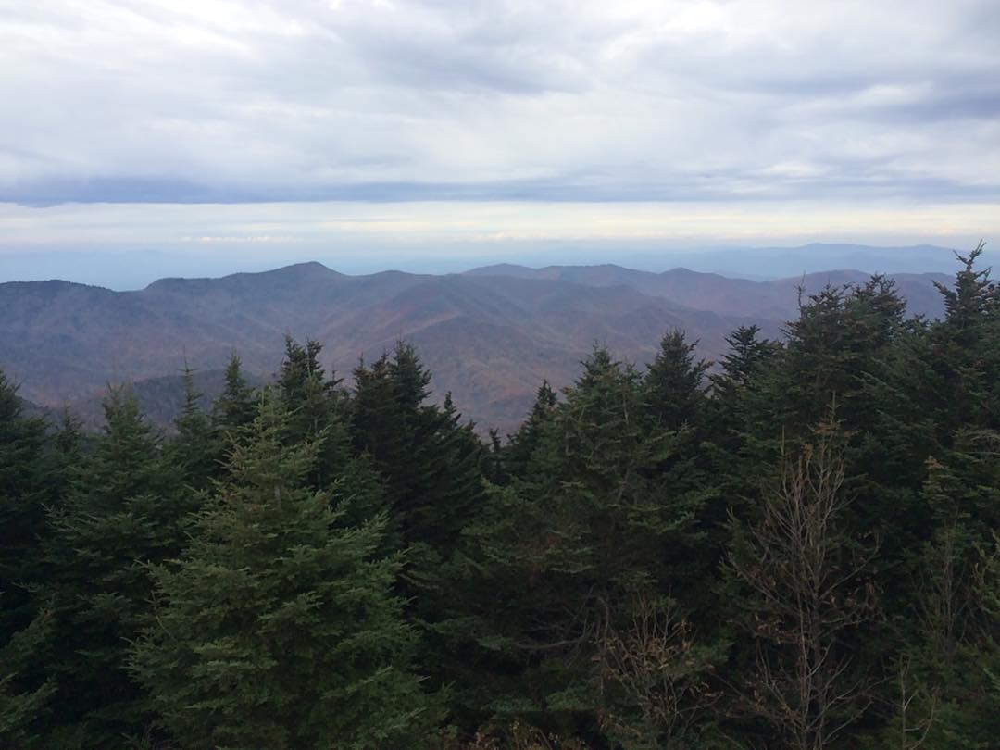
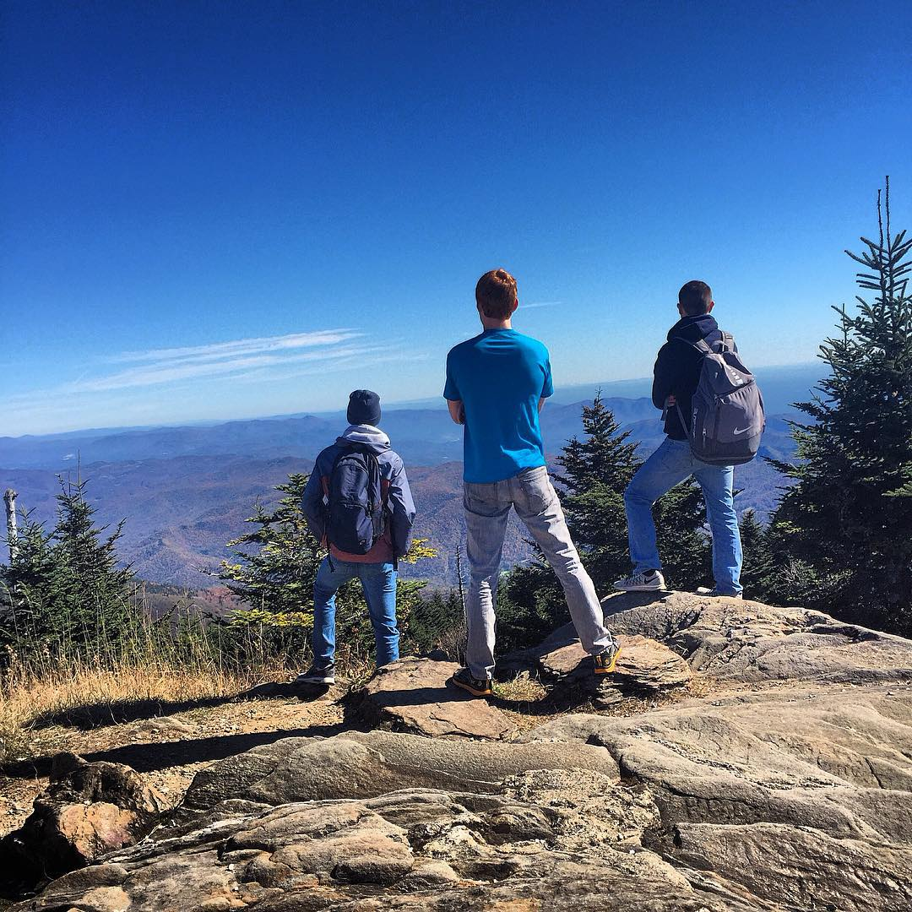
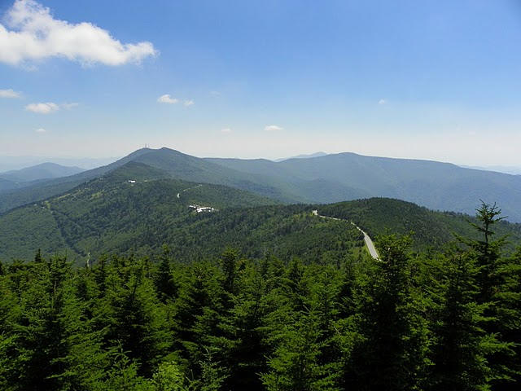

WHO IS MITCHELL?
Hello! My name is Mitchell. I would like to say the name Mitchell was given in a cool way, but the reality is I was named after the professor who first explored my topography and fell to his death near my waterfalls. His tomb is now located at my summit.
Anyway, I'm the highest mountain east of the Mississippi currently residing in the Black Mountains just outside of Asheville, North Carolina. My elevation is 6,6684 feet and I am surrounded by Pisgah National Forest.
I am one part of the beautiful Blue Ridge Mountain team. I have a lot of Souther Appalachian spruce-firs and wildflowers in the summer. I am an oasis of cool air in the summer, but in the winter the roads to me are closed. Come visit me soon.
MY LIFE IN PHOTOS
- 
- 
- 